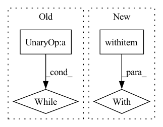

Pattern ID :4361
Before Change
request_objects = self.handlers.popleft()
for obj in request_objects:
// obj.wait()
while not obj.is_completed() :
pass
res = self.buffers[self.pointer]
self.pointer = (self.pointer + 1) % self.max_buffersAfter Change
// concurrent wait-n"-clone
with torch.cuda.stream(self.clone_stream):
with torch .no_grad():
for obj, v in zip(request_objects, bres):
obj.wait()
if isinstance(v, torch.Tensor):
res.append(v.clone())In pattern: SUPERPATTERN
Frequency: 5
Non-data size: 4
Instances Fragment ID: 16073175
Project Name: saareliad/ftpipe
Commit Name: 4221f185909e9f45ceb9591563d4967ccbbd6df6
Time: 2021-05-02
Author: saareliad@campus.technion.ac.il
File Name: pipe/pipeline/communication/buffer.py
M Class Name: Buffers
N Class Name: Buffers
M Method Name: wait_first(1)
N Method Name: wait_first(1)
M Parent Class:
N Parent Class:
M File Name: pipe/pipeline/communication/buffer.py
N File Name: pipe/pipeline/communication/buffer.py
M Start Line: 83
M End Line: 95
N Start Line: 84
N End Line: 99
Before Change
test_display.display(self.img, {"sorted_predictions": [["Dabbing", 0.6]]})
call_count = 0
while time.perf_counter() - start_time <= test_display.duration:
test_display.display(self.img, {"sorted_predictions": [["Dabbing", 0.6]]})
mock_display_class_name.assert_called_with(self.img, "Dabbing")
call_count = mock_display_class_name.call_count
After Change
assert mock_display_class_name.call_count == 1
// Call display once during the duration
with patch ("sense.display.DisplayClassnameOverlay._get_current_time",
return_value=test_display._start_time + self.half_duration):
test_display.display(self.img, {"sorted_predictions": [["Dabbing", 0.51]]})
// Call display post the duration
with patch("sense.display.DisplayClassnameOverlay._get_current_time", Fragment ID: 16073174
Project Name: twentybn/sense
Commit Name: 95396546b245d69f6eebd44c0b1bbf17a4f60e54
Time: 2021-02-03
Author: kangnahua@gmail.com
File Name: tests/test_display.py
M Class Name: TestDisplayClassnameOverlay
N Class Name: TestDisplayClassnameOverlay
M Method Name: test_display_default_within_duration(2)
N Method Name: test_display_default_within_duration(2)
M Parent Class: unittest.TestCase
N Parent Class: unittest.TestCase
M File Name: tests/test_display.py
N File Name: tests/test_display.py
M Start Line: 101
M End Line: 112
N Start Line: 103
N End Line: 124
Before Change
group = world.create_rpc_group("group", ["0", "1"])
buffer = DistributedBuffer("buffer", group, 5)
begin = time()
while time() - begin < 5:
buffer.append(data)
sleep(0.01)
assert buffer.size() == 5
else:After Change
sleep(2)
group = world.get_rpc_group("group", "0")
buffer = group.get_paired("buffer").to_here()
with pytest .raises(ValueError):
buffer.size()
assert buffer.size("0") == 5
assert buffer.size("1") == 0
buffer.append(data, buffer_process="1") Fragment ID: 16073180
Project Name: iffix/machin
Commit Name: 9f238e7da2fee833f98db13e778d7a59275676c3
Time: 2020-07-18
Author: hanhanmumuqq@163.com
File Name: test/frame/buffers/test_buffer_d.py
M Class Name: TestDistributedBuffer
N Class Name: TestDistributedBuffer
M Method Name: test_append_size(1)
N Method Name: test_append_size(1)
M Parent Class: WorldTestBase
N Parent Class: WorldTestBase
M File Name: test/frame/buffers/test_buffer_d.py
N File Name: test/frame/buffers/test_buffer_d.py
M Start Line: 65
M End Line: 73
N Start Line: 59
N End Line: 81
Before Change
else:
// Other slots wait until rank 0 is done downloading, which will
// correspond to the head writing a done.txt file.
while not os.path.isfile(
os.path.join(self.hparams.data_dir, "done.txt")
) :
time.sleep(10)
self.cat_ids = []
After Change
// If backend is local download data.
if self.hparams.backend == "local":
// Use a file lock so only one worker on each node does the download.
with filelock .FileLock(os.path.join(self.hparams.data_dir, "download.lock")):
if not all(
[
os.path.isdir(os.path.join(self.hparams.data_dir, d))
for d in ["train2017", "val2017"] Fragment ID: 16073177
Project Name: determined-ai/determined
Commit Name: 20263dc321191b79a2a3643813551a3490b99338
Time: 2021-05-04
Author: rb@determined.ai
File Name: examples/computer_vision/detr_coco_pytorch/model_def.py
M Class Name: DETRTrial
N Class Name: DETRTrial
M Method Name: __init__(2)
N Method Name: __init__(2)
M Parent Class: PyTorchTrial
N Parent Class: PyTorchTrial
M File Name: examples/computer_vision/detr_coco_pytorch/model_def.py
N File Name: examples/computer_vision/detr_coco_pytorch/model_def.py
M Start Line: 91
M End Line: 112
N Start Line: 98
N End Line: 107
Before Change
else:
// Other slots wait until rank 0 is done downloading, which will
// correspond to the head writing a done.txt file.
while not os.path.isfile(
os.path.join(self.hparams.data_dir, "done.txt")
) :
time.sleep(10)
self.cat_ids = []
After Change
// If backend is local download data.
if self.hparams.backend == "local":
// Use a file lock so only one worker on each node does the download.
with filelock .FileLock(os.path.join(self.hparams.data_dir, "download.lock")):
if not all(
[
os.path.isdir(os.path.join(self.hparams.data_dir, d))
for d in ["train2017", "val2017"] Fragment ID: 16073178
Project Name: determined-ai/determined
Commit Name: 20263dc321191b79a2a3643813551a3490b99338
Time: 2021-05-04
Author: rb@determined.ai
File Name: examples/computer_vision/deformabledetr_coco_pytorch/model_def.py
M Class Name: DeformableDETRTrial
N Class Name: DeformableDETRTrial
M Method Name: __init__(2)
N Method Name: __init__(2)
M Parent Class: PyTorchTrial
N Parent Class: PyTorchTrial
M File Name: examples/computer_vision/deformabledetr_coco_pytorch/model_def.py
N File Name: examples/computer_vision/deformabledetr_coco_pytorch/model_def.py
M Start Line: 98
M End Line: 119
N Start Line: 105
N End Line: 114